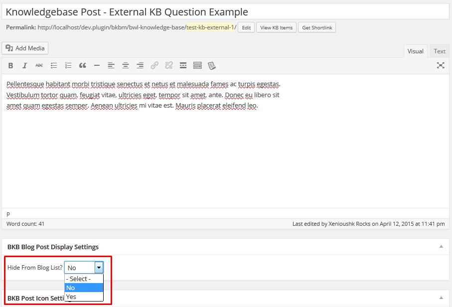

Ajaxified FAQ Search - Advanced FAQ Addon
- Plugin Version: 1.1.9
- Plugin Last Update: 20/03/2025
- Plugin Create Date: 04/05/2015
- Web Site: https://bluewindlab.net
- Email Us: hkhan.cse@gmail.com
- Developed By: Md Mahbub Alam Khan
- Skype: bluewindlab
If you like this plugin, please spare a minute to rate it.
https://codecanyon.net/item/ajaxified-faq-search-advanced-faq-addon/12033214
If you want any support, Please feel free to contact me via my profile page
https://codecanyon.net/user/xenioushk.
Addon Overview
Ajaxified FAQ Search is a powerful addon for BWL Advanced FAQ Manager that allows you're user to find Frequently Ask Questions quickly & easily from you're website.
This addon comes with 25+ animated modal window with sticky button for the best user experience(UX). Plugin comes with almost zero configruation and zero coding requirement feature.
Addon also brings extensive option panel that allows you to configure search window settings according to you're need. You can set window color , Turn ON/OFF search sticky button, Change sticky button colors, set Pagination, set animation and many more.

KB Display As Blog Post - Knowledge Base Addon
- Plugin Version: 1.0.8
- Plugin Last Update: 28/07/2023
- Plugin Create Date: 13/04/2015
- Premium Support: Send A Message
- Web Site: https://bluewindlab.net
- Email Us: hkhan.cse@gmail.com
- Developed By: bluewindlab
- Skype: bluewindlab
If you like this theme please spare a minute to rate it.
If you want any support, Please feel free to contact me via my profile page
https://codecanyon.net/user/xenioushk.
Requirements
You need at least WordPress version 4.8+ installed for this plugin to work properly.
It is strongly recommended that you always use the latest stable version of WordPress to ensure all
known
bugs
and security issues are fixed.
Other requirements:
- PHP version 5.4.45 or greater.
- MySQL version 5.5.51 or greater.
- BWL Knowledge Base Manager Plugin (Minimum version 1.0.9 required ).
Plugin Installation
To install a plugin, you must first upload the plugin files and then activate the theme. The plugin files can be uploaded in two ways:
- FTP Upload: Using your FTP client, upload the non-zipped plugin folder into the /wp-content/plugins/ folder on your server.
- WordPress Upload: Navigate to Plugins >> Add New >> Upload Plugin. Go to browse, and select the zipped theme folder. Hit "Install Now" and the theme will be uploaded and installed.
Step 01: Go to WP admin dashboard and click on Plugins >> Add New.

Step 02: Click on Upload Plugin.

Step 03:
Once plugin successfully uploaded in your server you will get an message to activate it.
Click on "Activate Plugin" Link and plugin will be ready to use .
After activating plugin, you will redirect in plugins section of wp-admin panel and show new installed
plugins
information in there.

How to use?
- Once you completed installation process, plugin will automatically include all Knowledge Base items with you're blog posts according to date order. But, You can control Knowledge Base posts display using bulk/quick edit.
- Addon comes with built-in show/hide custom meta box option to control Knowledge Base posts display. This way, you can easily handle view status, while you're adding/editing KB posts.

- If you want to change settings for single Knowledge Base post, then you can use quick edit(inline editing) option.
- If you want to change settings for multiple Knowledge Base post, then you can use bulk edit option.

- Addon allows you to upload featured image for Knowledge Base items. This way, you can easily set featured image for Knowledge Base Post and display with blog post(Theme Support Required).
Option Panel
From version 1.0.3 we added an unique option to include Knowledge base posts in to Regular blog post RSS feed. To enable this option go to Plugin Option panel > General tab and you will get an option "Include KB in Blog Feed? ". Just turn it ON and KB post automatically included in to blog feed.

Upgrade Notes:
Please take a backup before update all files and folder.
2018, January, 05 - v 1.0.4
Replace Addon all files and folders.
2016, June, 07 - v 1.0.3
Replace Addon all files and folders.
2016, April, 27 - v 1.0.2
Replace Addon all files and folders.
2015, November, 20 - v 1.0.1
Replace Addon all files and folders.
2015, April, 13 - v 1.0.0
Initial release.
Change Log
2018, January, 05 - v 1.0.4
- Fixed minor styling issues.
- Improved Documentation.
2016, June, 07 - v 1.0.3
- Fix multisite notification issue.
- Add option to include KB post in to Blog Feed.
- Improved Documentation.
2016, April, 27 - v 1.0.2
- Added Multisite support.
- Improved Addon Performance.
- Improved Documentation.
2015, November, 20 - v 1.0.1
- Improved Addon Performance.
- Improved Documentation.
2015, April, 13 - v 1.0.0
- Initial release.
Sources and Credits
- Ideas By BlueWindLab
- Color Picker By https://www.eyecon.ro/colorpicker